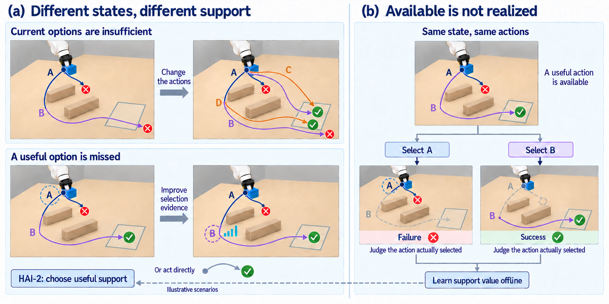
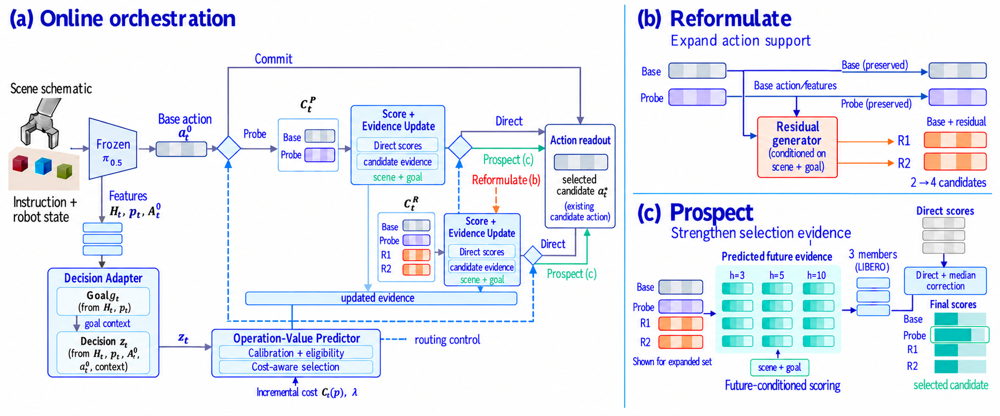

Useful action is missing
当前候选集没有足够好的动作，需要 Reformulate 扩展可用的 action support。
STATE-ADAPTIVE DECISION CAPABILITY ORCHESTRATION
在冻结 VLA 中学习状态自适应的决策能力编排：根据当前 decision state，判断需要直接执行、扩展动作支持，还是在固定候选集上增强选择证据。
演示展示策略如何依据当前状态，在 Commit、Reformulate 与 Prospect 之间选择所需的决策支持。
TWO DECISION GAPS

论文区分 action support insufficiency 与 selection evidence insufficiency，并据此组织不同的决策能力。
当前候选集没有足够好的动作，需要 Reformulate 扩展可用的 action support。
候选动作已经存在，但 Direct 证据不足，需要 Prospect 强化固定候选集上的选择。
HAI-2 / PAPER MECHANISM

冻结 VLA 提供 Base action 与内部表征，HAI-2 在 Probe 后重新评估 Direct、Reformulate、Prospect 路径，并用真实选中动作的同状态结果学习编排。
直接执行当前 Base action，在现有候选证据足够时停止额外决策。
生成残差动作，扩展 action support；Base action 仍作为动作先验保留。
在固定候选集上增强选择证据，并由 bounded orchestrator 按状态与成本重新路由。